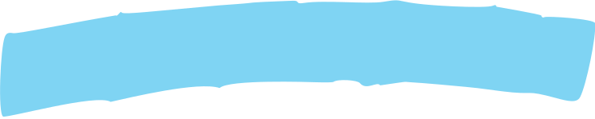
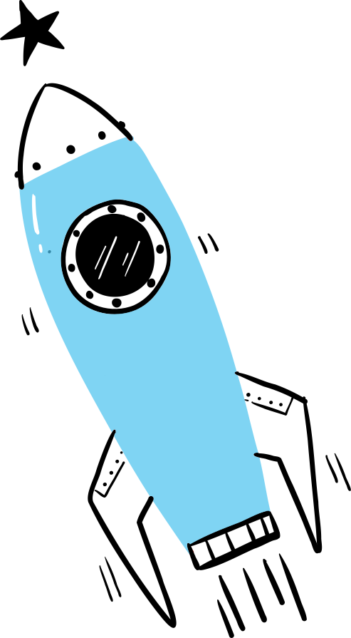

Otras formas de participar
Reconocemos que más allá de la inversión financiera, el conocimiento y la experiencia son vitales. Nuestros emprendedores buscan asesores expertos en diversos campos para orientar y enriquecer sus proyectos, destacando la importancia del consejo experimentado en el camino hacia el éxito.
 Tipos de aportes
Tipos de aportes
Descubre oportunidades para ofrecer tu experiencia en áreas críticas, ayudando a los emprendedores a fortalecer sus capacidades en aspectos esenciales del desarrollo empresarial y el crecimiento sostenible.
ÚneTE a nuestra red de mentores
 Fernando Bernal
Experto en mercadeo, finanzas y modelos de negocios.
Alejandro Munar
Experto en mercadeo y evaluación de viabilidad de proyectos de
emprendimiento.
Fernando Bernal
Experto en mercadeo, finanzas y modelos de negocios.
Alejandro Munar
Experto en mercadeo y evaluación de viabilidad de proyectos de
emprendimiento.

Conoce nuestros eventos
|
1. ActinSpace
Organizaremos la cuarta versión en donde la agencia aeroespacial Francesa coloca el
conocimiento aeroespacial para innovar en su emprendimiento.
Segundo semestre
|
2. Tres días de emprendimiento 3DE
Realizaremos la octava version en el segundo semestre. Evento con siete años
consecutivos de funcionamiento, participan 12 universidades y la Cámara de Comercio de
Bogotá, se realizara en el marco del GOFEST.
|
|
3. Conversatorio Mentes Emprendedoras Éxitos que Inspiran
Espacio para hablar con emprendedores e invitados sobre emprendimiento, sus casos
reales de éxito y errores al aprender.
|
